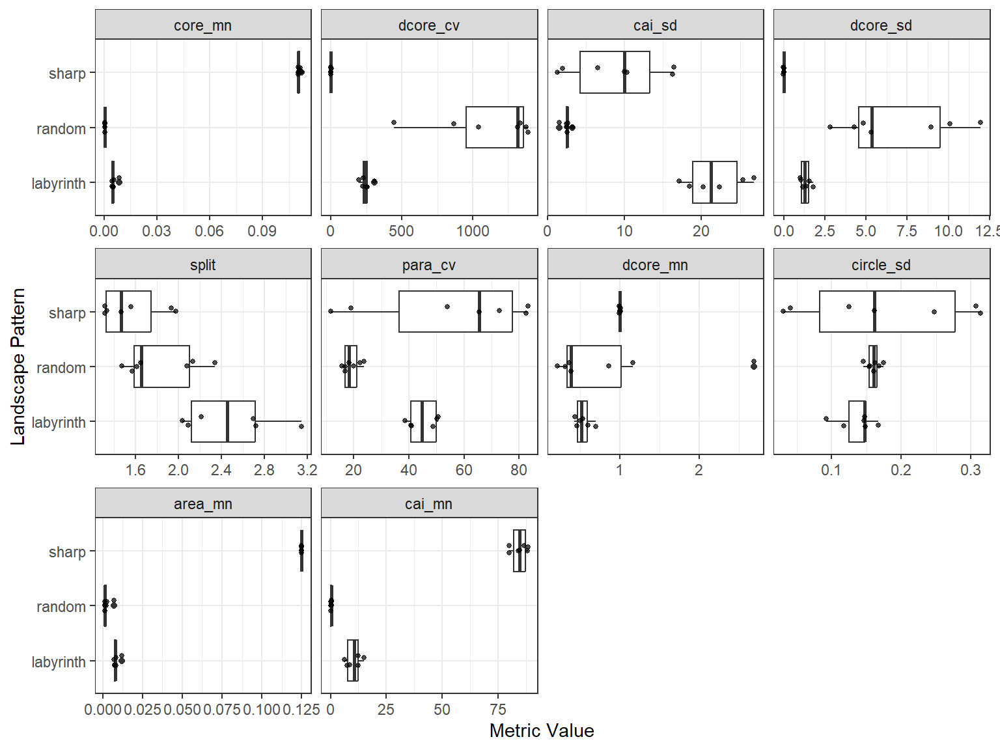

library(spatPatClassifyR)
set.seed(123456)
# Generate sample landscapes
sample_landscapes <- create_landscapes(
n = 20,
patterns = c("random", "sharp", "labyrinth"),
width = 50,
height = 50
)
#> ✔ Successfully generated all 20 training landscapesThis vignette shows how to calculate landscape metrics from landscape objects and how to find metrics that are informative for distinguishing different spatial patterns.
Calculating Landscape Metrics
Landscape metrics can be calculated using the calculate_landscape_metrics() function. By default, this function computes all landscape metrics available in the landscapemetrics package. Users can also specify a subset of metrics to calculate by providing a vector of metric names. To find available metric names, use:
# Select either the landscape-level or class-level metrics
landscapemetrics::list_lsm(level = "landscape")
#> # A tibble: 66 × 5
#> metric name type level function_name
#> <chr> <chr> <chr> <chr> <chr>
#> 1 ai aggregation index aggregation metr… land… lsm_l_ai
#> 2 area_cv patch area area and edge me… land… lsm_l_area_cv
#> 3 area_mn patch area area and edge me… land… lsm_l_area_mn
#> 4 area_sd patch area area and edge me… land… lsm_l_area_sd
#> 5 cai_cv core area index core area metric land… lsm_l_cai_cv
#> 6 cai_mn core area index core area metric land… lsm_l_cai_mn
#> 7 cai_sd core area index core area metric land… lsm_l_cai_sd
#> 8 circle_cv related circumscribing circle shape metric land… lsm_l_circle…
#> 9 circle_mn related circumscribing circle shape metric land… lsm_l_circle…
#> 10 circle_sd related circumscribing circle shape metric land… lsm_l_circle…
#> # ℹ 56 more rowsMetrics can be calculated on the landscape level (one metric for the entire landscape) or on the class level (one metric per land cover class in the landscape).
# Calculate all landscape-level metrics for the sample landscapes
landscape_metrics <- calculate_landscape_metrics(
sample_landscapes,
level = "landscape"
)
#> ■■■■■■■■■■■■■■■■■ 53% | ETA: 3sTo calculate selected metrics, provide a vector of valid metric names to the metrics argument. Find available metric names using landscapemetrics::list_lsm() as shown above.
# Calculate all class-level metrics for the sample landscapes
class_metrics <- calculate_landscape_metrics(
sample_landscapes,
level = "class",
metrics = c("ai", "area_cv", "cai_cv") # Define a subset of metrics to calculate
)Finding Informative Metrics
The package includes different methods to evaluate the calculated landscape metrics and find those that are most informative for distinguishing different spatial patterns. The general function to evaluate landscape metrics is evaluate_landscape_metrics(). It supports different methods for metric evaluation:
-
coeffvar_all: Coefficient of Variation (CV = SD/mean). Ranks metrics by their relative variability across landscapes. -
lin_mod_r2: Fits value ~ pattern for each metric and ranks by R². -
mean_groups: Calculates relative differences between pattern-specific means and overall mean, then sums across patterns. -
fisher_score: Fisher Score (ratio of between-group to within-group variance). -
kruskal_effsize: Kruskal-Wallis H test effect sizes. Non-parametric test for differences between groups.
By default, the function excludes metrics with high correlation (above 0.7). This can be adjusted using the correlation_threshold argument.
# Evaluate landscape metrics using Fisher Score
metric_evaluation <- evaluate_landscape_metrics(
landscape_metrics,
method = "fisher_score",
metrics_number = 10, # Select top 10 informative metrics
correlation_threshold = 0.7
)
#> Warning: Excluded 120 rows containing 6 metrics with NA values. Metrics removed:
#> "enn_cv", "enn_mn", "enn_sd", "iji", "pafrac", and "rpr" Use
#> `exclude_NA_metrics = FALSE` to retain (not recommended for model training)
#> Warning: Excluded 3 metrics with zero variance: "pr", "prd", and "ta"
#> ! Only 8 uncorrelated metrics found. Filling to 10 with correlated metrics.To visually compare the top 10 metrics, use the plot_metrics() function:
plot_metrics(
landscape_metrics,
selected_metrics = metric_evaluation
)